PRANAVI GROVER
Creative • Analytical • Ambitious
Passionate about technology, creativity, and innovation, with a strong interest in exploring artificial intelligence and emerging technologies. Enjoys building projects, discovering new ideas, and applying knowledge through creative and practical solutions. Driven by curiosity and a commitment to continuous learning, with a focus on developing skills, solving problems, and creating meaningful impact through technology.
About Me
Passionate about technology, creativity, and innovation, I enjoy exploring artificial intelligence and emerging digital tools. I am constantly seeking opportunities to learn, experiment, and transform ideas into meaningful projects. By combining creativity with problem-solving, I strive to develop practical and impactful solutions.
My journey has been shaped by curiosity, perseverance, and a commitment to growth. Through various projects and achievements, I have strengthened my knowledge of technology while developing valuable creative and analytical skills. Every project reflects my dedication to innovation, lifelong learning, and excellence. As I continue to grow, I look forward to embracing new opportunities, expanding my expertise, and contributing to a future driven by technology and innovation.
Technology and innovation have always inspired me to think creatively and explore new possibilities. My interest in artificial intelligence and digital tools has enabled me to develop projects that combine imagination with practical problem-solving. Through continuous learning and hands-on experience, I have built a strong foundation in emerging technologies and creative thinking.
Each project represents a step in my journey toward growth, knowledge, and innovation. With a commitment to excellence and a passion for discovering new ideas, I continue to expand my skills and explore opportunities that challenge me to think beyond boundaries.
Driven by curiosity and a passion for innovation, I enjoy exploring the ever-evolving world of technology and artificial intelligence. Over time, I have developed valuable skills through research, creativity, and project-based learning, allowing me to transform ideas into meaningful outcomes. I believe that technology has the power to inspire change, solve problems, and create new opportunities.
My experiences have strengthened both my technical and creative abilities while encouraging a mindset of continuous growth. Through dedication, learning, and innovation, I aim to make a positive impact and contribute to a future shaped by knowledge, creativity, and technological advancement.
AI Education Generative AI Research Innovation Digital Transformation
AI Projects Portfolio
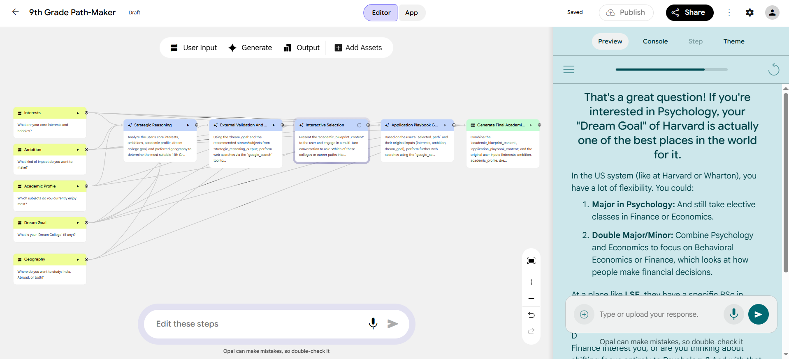
Google Opal Mini Apps
Made mini AI applications using Google Opal, including a Virtual Try-On solution for AI-powered apparel visualization and an Exam Path Finder to help students discover suitable academic and career pathways through intelligent recommendations.
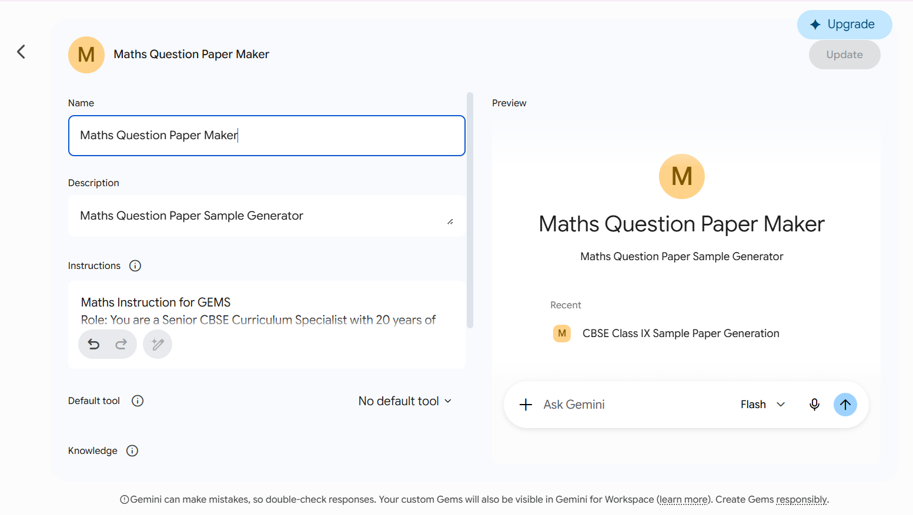
Gemini Gems AI Apps
Developed an AI-powered Question Paper Maker using Gemini Gems, enabling automated generation of customized question papers based on subject, difficulty level, learning outcomes, and assessment requirements.
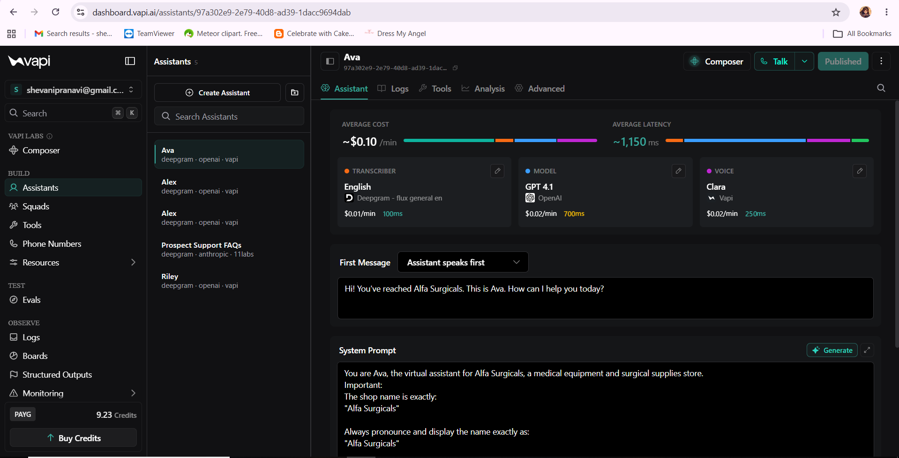
AI Voice Agents
Built AI Voice Agents using Vapi AI, enabling natural voice-based conversations, automated responses, and intelligent task handling through advanced speech and language AI technologies.
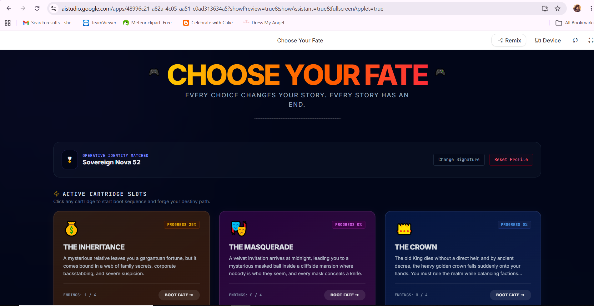
Game Projects
Designed and developed an interactive game using Google AI Studio, integrating generative AI capabilities to create engaging gameplay experiences and intelligent user interactions.
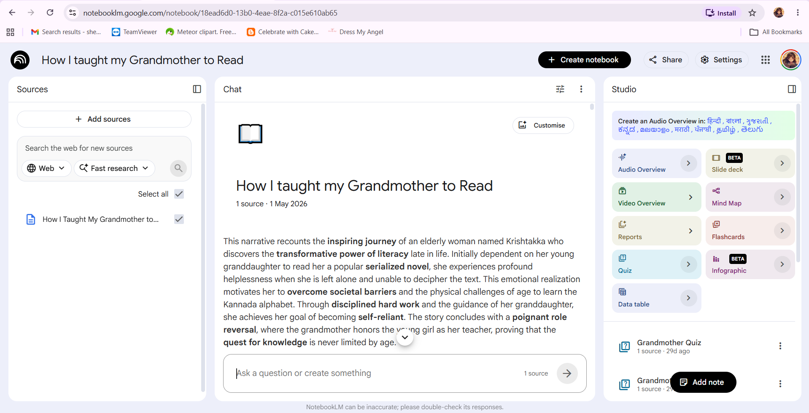
NotebookLM Projects
Explored Google NotebookLM to analyze documents, generate insights, create summaries, and interact with information through AI-powered research and knowledge management capabilities.
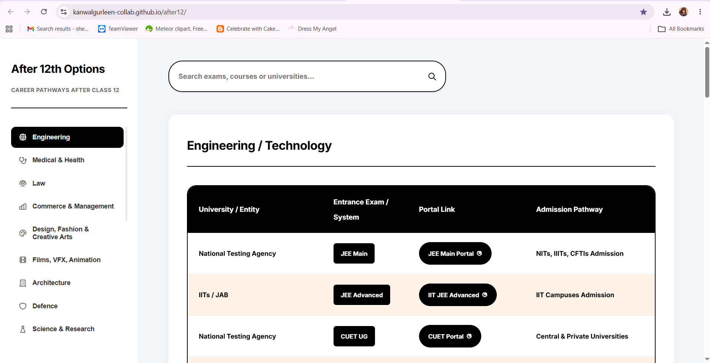
Careers after 12th Portal
Developed a comprehensive Careers After 12th Portal that maps and presents diverse higher education, entrance examination, vocational, and career opportunities available to Grade 12 students across India.
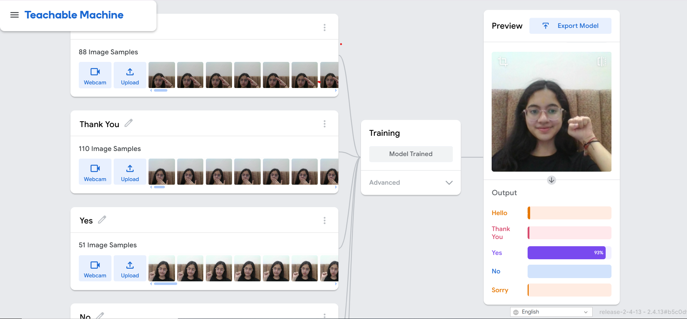
Teachable Machine
Built and trained a simple machine learning classification model using Google Teachable Machine to recognize and categorize inputs without writing code, demonstrating the fundamentals of AI model development.
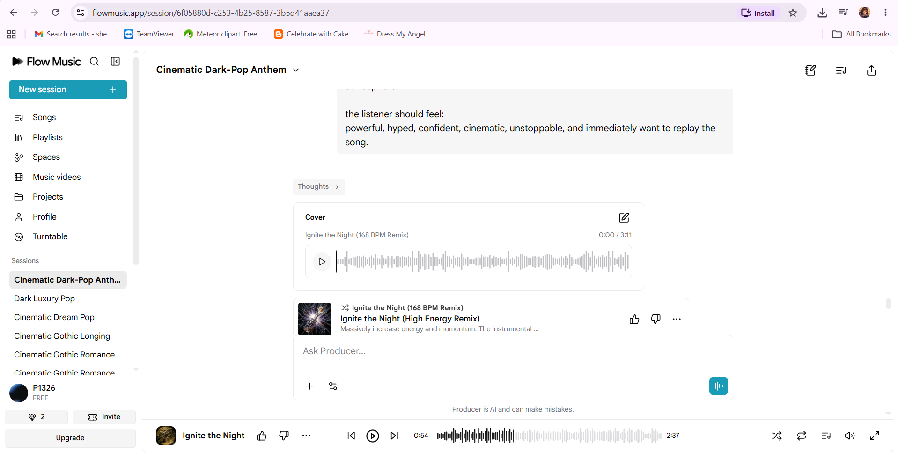
AI Music Creation
Created AI-generated music using the FlowMusic app by transforming text prompts into original songs, exploring generative AI for music composition, lyrics, and audio production.
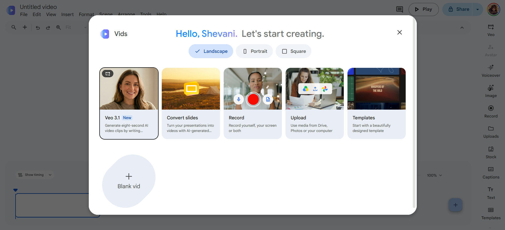
AI Video Creation
Created AI-powered videos by leveraging Google Vids, Gemini, and ChatGPT for script generation, storyboarding, visual design, and automated video production workflows.
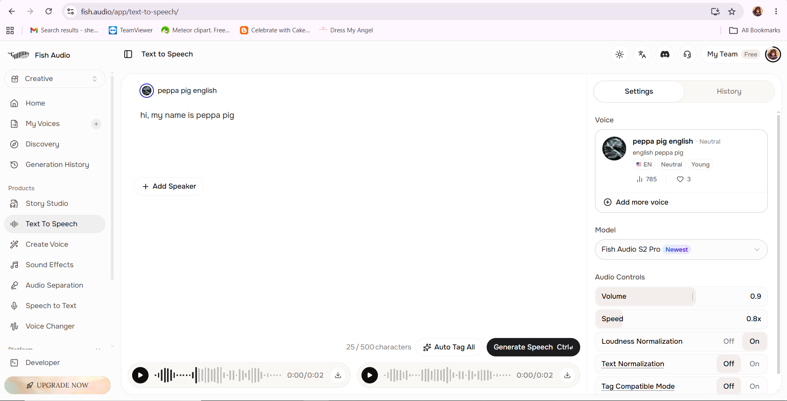
Narration using Fish Audio
Created AI-generated sound effects, music, and voice narrations using Fish Audio, demonstrating the use of generative AI for audio production, storytelling, and multimedia content creation.
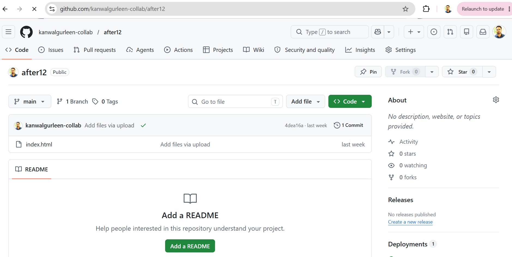
Github Projects
Used GitHub to host and publish multiple HTML projects online, enabling live website deployment, version control, and seamless sharing of web applications on the internet.
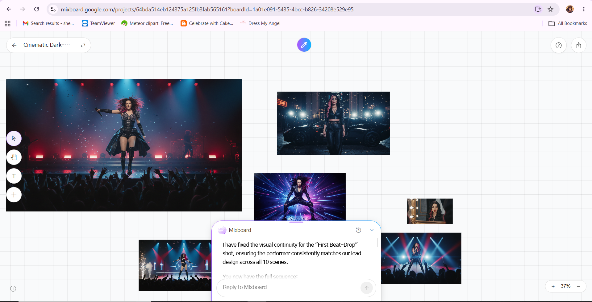
Google Mixboard Projects
Created multiple AI projects on Google Mixboard, experimenting with generative AI tools, workflows, and interactive experiences to solve real-world problems and enhance productivity.
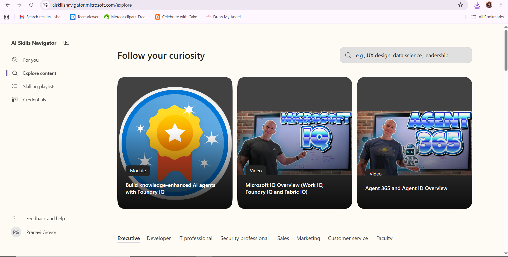
Microsoft AI Skills Fest
Participated in the Microsoft AI Skills Fest (June 8–12, 2026), an online learning event focused on exploring the latest developments in artificial intelligence and its real-world applications. Engaged in AI-focused sessions and activities that enhanced my understanding of modern AI tools, technologies, and industry trends.
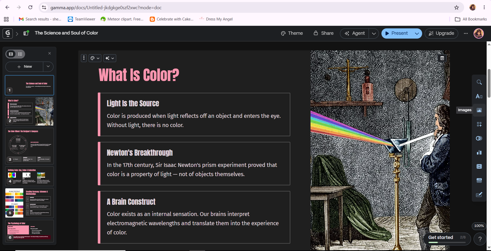
Multiple Presentations Using Gamma
Created multiple presentations using Gamma AI, leveraging artificial intelligence to transform ideas into visually appealing and well-structured slides. This experience enhanced my skills in AI-assisted content creation, presentation design, and effective communication of information.
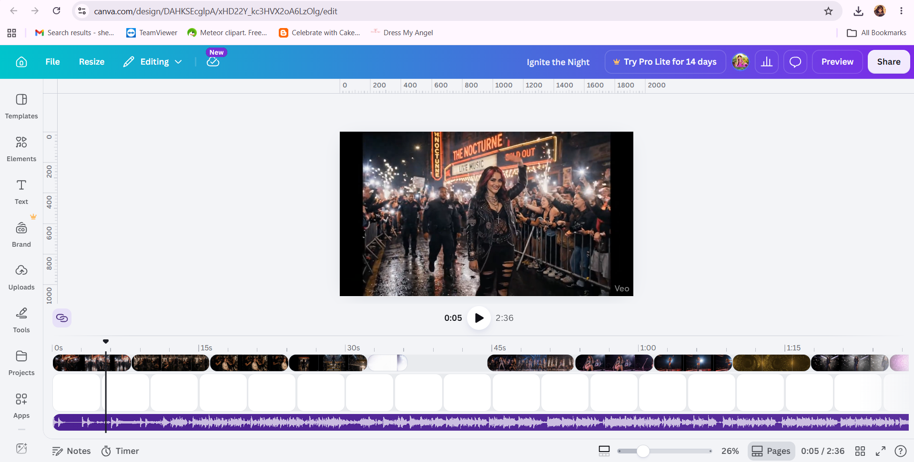
Multiple Projects Using Canva
Created multiple projects using Canva AI, utilizing AI-powered design tools to produce engaging visuals, presentations, posters, and creative content.
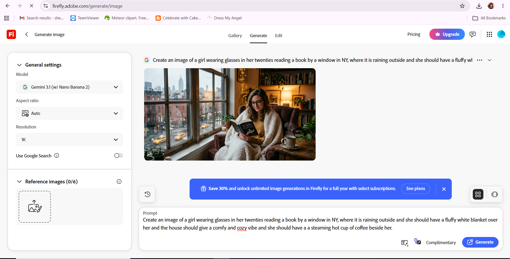
Adobe Firefly
Created various creative projects using Adobe Firefly, leveraging generative AI to produce images, visual assets, and design concepts from text prompts.
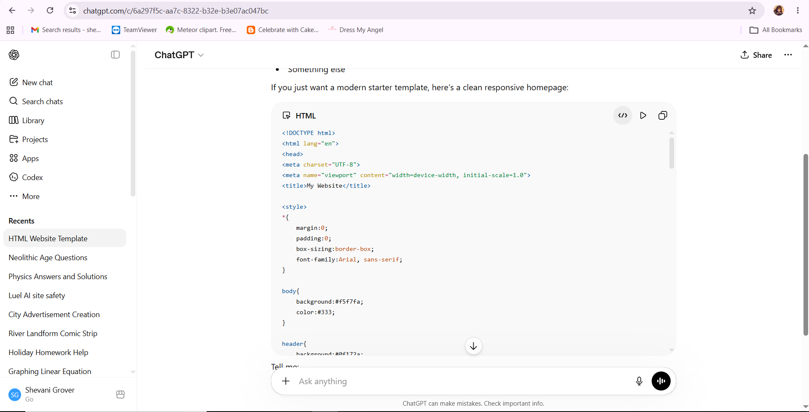
Created multiple HTMLs/Stickers/Images/Prompts using ChatGPT
Created multiple HTML webpages, digital stickers, images, and AI prompts using ChatGPT for various creative and technical projects. This experience enhanced my skills in content creation, prompt engineering, and AI-assisted design and development.
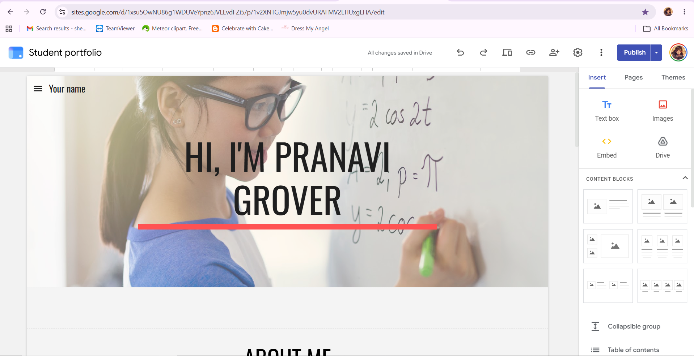
Explored and created webpages on Sites.Google.Com
Explored and created webpages using Google Sites, learning how to design and publish professional websites without extensive coding. This project involved organizing content, customizing layouts, and building user-friendly web pages for different purposes.
Hobbies and Interests
Reading
Reading allows me to explore new perspectives, expand my knowledge, and discover ideas that inspire creativity and personal growth.
Art and Drawing
Drawing provides a creative outlet for expressing ideas, experimenting with design, and bringing imagination to life through art.
Writing
Writing helps me communicate thoughts, share stories, and express creativity while continuously improving my language and communication skills.
Learning New Things
A natural curiosity drives me to explore new topics, develop new skills, and embrace opportunities for continuous growth and self-improvement.
Certifications
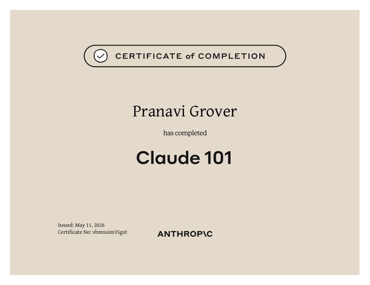
Claude Certificate
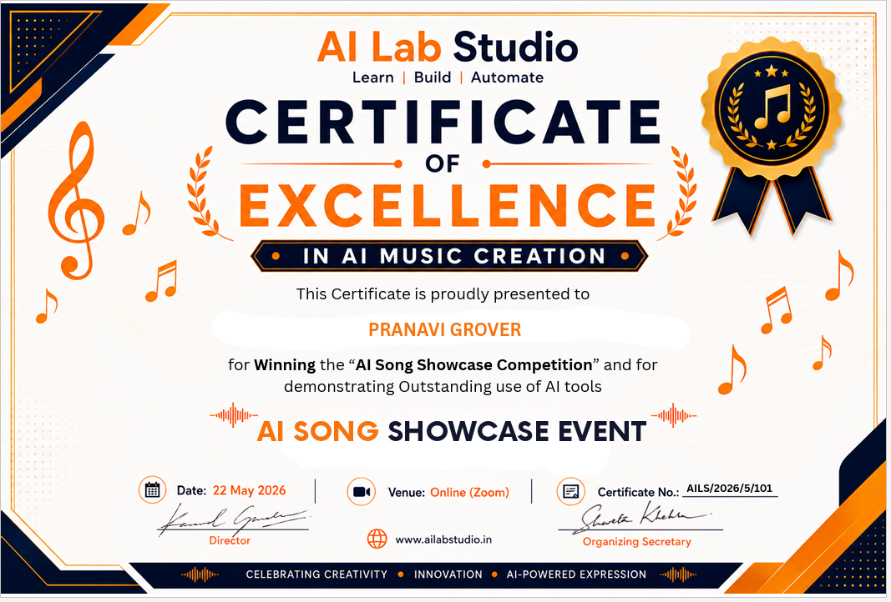
AI Lab studio Song Generation

Claude Certificate
